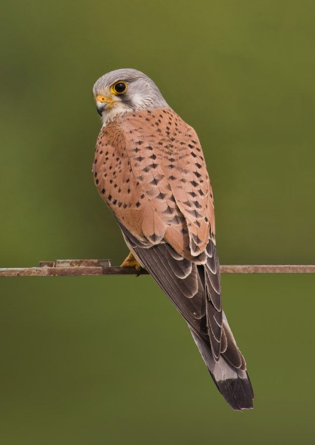

केस्ट्रेलCommon Kestrel
Falco tinnunculus · Falconidae · BRD-0049

- Scientific name
- Falco tinnunculus Linnaeus, 1758
- Family
- Falconidae
- Hindi
- केस्ट्रेल
- Status here
- native
- IUCN
- LC
When to look कब देखें
Present all year.
केस्ट्रेल / Common Kestrel
Falco tinnunculus Linnaeus, 1758 — Falconidae
केस्ट्रेल (कॉमन केस्ट्रेल) — पूर्वी उत्तर प्रदेश के कृषि क्षेत्रों, घास के मैदानों और बंजर भूमियों में पाया जाने वाला एक छोटा, लंबी पूंछ वाला शिकारी पक्षी (falcon) है। उत्तर प्रदेश में इसकी स्थानीय आबादी वर्षभर पाई जाती है, लेकिन सर्दियों के महीनों (अक्टूबर से मार्च) में मध्य एशिया से आने वाले प्रवासी पक्षियों के कारण इनकी संख्या काफी बढ़ जाती है। यह पक्षी अपनी विशेष शिकार शैली के लिए प्रसिद्ध है, जिसे 'होवरिंग' (hovering) या 'काइटिंग' कहा जाता है; यह हवा के विपरीत दिशा में उड़ते हुए आसमान में एक ही स्थान पर पंख फड़फड़ाकर पूरी तरह स्थिर हो जाता है और नीचे ज़मीन पर चूहों, छिपकलियों और कीड़ों पर नज़र रखता है। वयस्क नर की पीठ लाल-भूरी (rufous back) जिस पर काले धब्बे होते हैं, सिर धूसर-नीला और पूंछ के सिरे पर एक चौड़ी काली पट्टी होती है, जबकि मादा पूरी तरह से लाल-भूरी और धारीदार होती है। खेतों के ऊपर नियमित रूप से मंडराने वाला यह एकमात्र छोटा बाज है जो कृषि कीटों को नियंत्रित करने में महत्वपूर्ण भूमिका निभाता है।
Quick Identification त्वरित पहचान
| Feature | Description |
|---|---|
| Size | Small falcon (31–38 cm total length); slender build with a long, narrow tail |
| Hovering | Diagnostic behavior of hanging stationary in mid-air (kiting) while scanning the ground |
| Male plumage | Grey head, rufous-brown back with black spots, and a grey tail with a broad black terminal band |
| Female plumage | Uniformly rufous-brown back and tail, both heavily barred with dark brown |
| Bare Parts | Yellow cere, eye-ring, legs, and feet; bill is blue-grey with a black tip; claws are black and sharp |
| Flight | Swift, direct flight with rapid, pointed wingbeats; hovers frequently before diving |
Field tip: Watch over agricultural fields during winter. Look for a small falcon hovering perfectly in one spot in the air, with its head held pointing straight down. This is the only raptor in the Basti district that regularly exhibits this hovering flight over farmland. The female is larger than the male and is shown in the field tip.
Morphology आकारिकी
Biometrics (typical measurements in the northern Indian plains showing reverse sexual size dimorphism):
| Measurement | Range |
|---|---|
| Total length (Male) | 310–350 mm |
| Total length (Female) | 330–380 mm |
| Wing (Male) | 230–255 mm |
| Wing (Female) | 245–270 mm |
| Tail (Male) | 150–170 mm |
| Tail (Female) | 160–185 mm |
| Tarsus (Male) | 36–40 mm |
| Tarsus (Female) | 38–42 mm |
| Bill (Male) | 18–21 mm |
| Bill (Female) | 19–22 mm |
| Weight (Male) | 140–205 g |
| Weight (Female) | 180–290 g |
Plumage: Strongly dimorphic. Adult males have a fine-streaked blue-grey crown, nape, and sides of the neck, with a faint dark moustache stripe. The back and upperwing coverts are light chestnut-red (rufous) with small black diamond-shaped spots. The underparts are buff-white, streaked and spotted with black. The rump and tail are blue-grey, ending in a broad black subterminal band tipped with white. Adult females are warm rufous-brown above, with both the back and tail barred with dark brown, and have heavier streaking on the breast.
Bare parts: The hooked bill is slate-blue, dark at the tip, with a bright yellow cere. The eyes are dark brown, surrounded by a conspicuous yellow orbital ring. The legs and feet are yellow with sharp black talons.
Vocalisations
Common Kestrels are mostly silent outside the breeding season, but vocal near roosts or when disturbed.
- Alarm call: A loud, rapid, shrill keening sound: kee-kee-kee-kee or klee-klee-klee, repeated quickly when mobbed by crows or when humans approach a roost tree.
- Interaction call: A softer kirrr-kirrr or chree-chree, uttered between pairs or family members.
Behaviour & Ecology व्यवहार और पारिस्थितिकी
- Hovering niche: The Kestrel is a specialist hovering hunter. It flies into the wind at heights of 10 to 20 metres, flapping its pointed wings rapidly while keeping its head completely motionless to pinpoint movement in the grass. Once prey is spotted, it drops in stages before pouncing.
- Roosting: During winter, they roost individually in tall leafy trees like Mango (Mangifera indica) or Babool (Acacia nilotica), or on concrete structures like high water towers and bridge rafters.
- Territoriality: Wintering migrants establish feeding territories, which they defend from other kestrels and small hawks like Shikras.
Life Cycle / Phenology जीवन चक्र
- Breeding: Mostly breeds in the Himalayas (subspecies objurgatus breeds in South India, but the migratory nominate form tinnunculus breeds in temperate Eurasia). Sighting records suggest occasional breeding of resident pairs in northern UP between April and June.
- Nesting in breeding range: They do not build their own nests. They lay eggs in abandoned crow or magpie nests, on rocky cliff ledges, or in cavities of tall buildings.
- UP migration calendar: The wintering population from Central Asia arrives in Basti in October and departs by late March.
Host Plants or Prey आहार
Primary food items:
- Insects: Large grasshoppers, crickets, beetles, locusts, and swarming termites.
- Reptiles & Amphibians: Garden lizards (Calotes versicolor), small skinks, and young frogs.
- Mammals: Small field mice (Mus booduga), shrews, and gerbils.
- Birds: Occasional small ground-feeding birds like munias or sparrows.
Predators / Natural Enemies शत्रु
- Larger raptors: Black Kites (Milvus migrans) and large owls prey on kestrels, especially juveniles.
- Corvids: House Crows (Corvus splendens) aggressively mob hunting kestrels and force them to drop their prey.
- Mammals: Arboreal snakes and civets may raid roosts or nests.
Agricultural / Human Relevance कृषि प्रासंगिकता
Farmer's helper. The Common Kestrel is a highly beneficial predator for UP agriculture, consuming large numbers of field rodents and destructive insects (like locusts and grasshoppers) in open wheat and mustard crops.
Conservation and legal status: Protected under Schedule IV of the Wildlife Protection Act, 1972. Secondary poisoning from chemical rodenticides and insecticide-laden grasshoppers is a major threat. Preservation of grassy field margins and dead trees for perching are important conservation measures.
Expected Locally स्थानीय रूप से अपेक्षित
Not a field record. Written from published accounts for eastern Uttar Pradesh. No confirmed local sighting yet — if you have seen it, that is what the atlas needs.
अभी तक स्थानीय पुष्टि नहीं। यह विवरण प्रकाशित स्रोतों से है, किसी अवलोकन से नहीं।
A common sighting in the open agricultural zones of Basti district from November to February, particularly in the salt-affected patches and dry crop margins. They are frequently seen perched on electric lines alongside roads or hovering over open crop fields during windy afternoons. High concrete structures, like the water tanks in village centers, are favored roosting sites.
Distribution वितरण
Global range: Widespread across Europe, Asia, and Africa. Northern populations are highly migratory, wintering in tropical Africa and South/Southeast Asia.
In India: Widespread winter visitor throughout the plains, with resident breeding populations in the Himalayas and parts of the Western Ghats.
In Uttar Pradesh: Common state-wide in all open grassland and agricultural districts during winter.
In Basti district / eastern UP: Regularly recorded in rural fields and open pastures in all blocks from autumn to spring.
Research Questions शोध प्रश्न
Anyone can investigate these | कोई भी इन प्रश्नों की जाँच कर सकता है
- How many seconds can a Common Kestrel hover in a single sequence before moving or diving? — Time hovering duration in different wind speeds.
- What percentage of hover-hunts result in a successful strike on prey in Basti's fields? / बस्ती के खेतों में केस्ट्रेल की मंडराकर शिकार करने की सफलता दर क्या है? — Record and analyze hunting attempts.
- Do Kestrels prefer electric lines over tree branches as resting perches in Basti? — Count and compare perch selections along road-transects.
- How do Kestrels interact with resident Shikras when their hunting ranges overlap? / जब केस्ट्रेल और शिकरा के शिकार क्षेत्र आपस में मिलते हैं, तो उनके बीच क्या संबंध होते हैं? — Document chases and food conflicts.
- Does the wintering population of Kestrels in Basti show a preference for sugarcane margins over wheat fields? — Map sightings across different crop types.
Similar Species मिलती-जुलती प्रजातियाँ
| Species | Key Difference | हिंदी |
|---|---|---|
| Shikra (Accipiter badius) | Rounded wings (not pointed); grey back; barred underparts; hunts from cover, does not hover | शिकरा — गोल पंख, धूसर पीठ, झाड़ियों से शिकार |
| Amur Falcon (Falco amurensis) | Male is dark grey; female has heavily barred underparts and a white throat; passage migrant in November, does not winter locally | अमूर बाज — गहरा धूसर नर, अत्यंत दुर्लभ शीतकालीन प्रवासी |
| Black-winged Kite (Elanus caeruleus) | Pure white and pale grey plumage; jet-black shoulders; red eyes; hovers in mid-air | कपसी — सफ़ेद शरीर, काले कंधे, लाल आँखें |
Field rule: Small rufous-brown falcon with pointed wings, long barred tail, and a black-tipped yellow bill, hovering stationary over crop fields, is a Common Kestrel.
Taxonomy & Classification वर्गीकरण
Original description. Carl Linnaeus described the Common Kestrel as Falco tinnunculus in 1758 in his Systema Naturae (ed. 10, vol. 1, p. 90). The type locality was Sweden. The genus name Falco is Late Latin, derived from falx (a sickle), referencing the bird's silhouette with hooked claws and curved wings. The specific name tinnunculus is Latin for a kestrel, from tinnulus (shrill or ringing), describing its sound.
Subspecies. Ten subspecies are recognized globally. The subspecies resident and migrating to northern India is:
| Subspecies | Authority | Range | Notes |
|---|---|---|---|
| F. t. tinnunculus | Linnaeus, 1758 | Europe, North Africa, Siberia to Central Asia; winters in India | UP subspecies; nominate form; northern migrants augment local populations |
Family and order placement. Placed in the order Falconiformes, family Falconidae, subfamily Falconinae (true falcons).
Phylogenetic notes. Falco tinnunculus belongs to a group of closely related kestrels (including the Rock Kestrel and Malagasy Kestrel) that diverged from other Falco species in the late Pliocene.
IUCN status rationale. Listed as Least Concern (LC) due to its extremely large range and stable global population, despite declines in parts of Europe due to pesticide usage.
Photo Gallery फोटो गाँव (गैलरी)
References संदर्भ
- Linnaeus, C. (1758). Systema Naturae. Tenth Edition. Holmiae, p. 90. [original description]
- Ali, S. & Ripley, S. D. (1999). Handbook of the Birds of India and Pakistan. Vol. 1. Oxford University Press, New Delhi.
- Grimmett, R., Inskipp, C. & Inskipp, T. (2011). Birds of the Indian Subcontinent. 2nd ed. Christopher Helm, London.
- Village, A. (1990). The Kestrel. T & AD Poyser, London.
- BirdLife International (2024). Falco tinnunculus. IUCN Red List of Threatened Species. Ver. 2024.
- GBIF Occurrence Data — Falco tinnunculus, Uttar Pradesh (2010–2025).
Source file: species/fauna/birds/common_kestrel.md